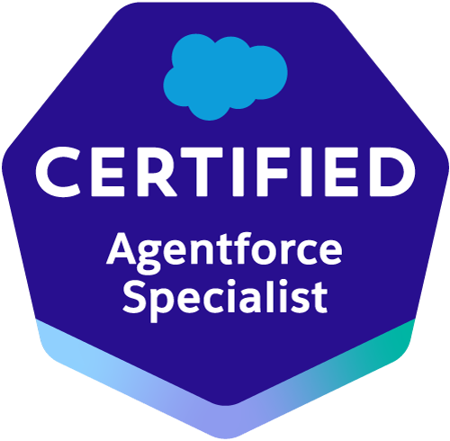

Je concois des solutions Salesforce robustes et evolutives,j'integre des APIs et j'automatise les processus metierpour creer de la valeur durable.

Scannez-moi
Accedez a mon portfolio, projets et plus encore.
A propos
Developpeur Salesforce certifie avec plus de 5 ans d'experience dans
la conception, le developpement et l'integration de solutions sur
Salesforce. Specialise dans l'automatisation des processus,
l'integration d'APIs, l'IA Agentforce et la creation d'applications
performantes.
J'accompagne les entreprises dans leur transformation digitale en
delivrant des solutions fiables, securisees et orientees metier.
Expertises
SF Salesforce Partner
AI Agentforce Specialist
DC Data Cloud Consultant
API API Integration
Competences cles
Salesforce
ApexLWCVisualforceFlowSOQL / SOSLEinstein
Integration & API
REST APISOAP APIOAuth 2.0PostmanMuleSoft
Langages & Backend
JavaSpring BootNode.jsJavaScriptSQL
Outils & DevOps
GitCI/CDDockerJenkinsGitHubVS Code
Plateformes
SalesforceAgentforceData CloudHerokuAzure
Me contacter
Disponible pour des missions et projets Salesforce, integrations
API, automatisations et solutions IA.